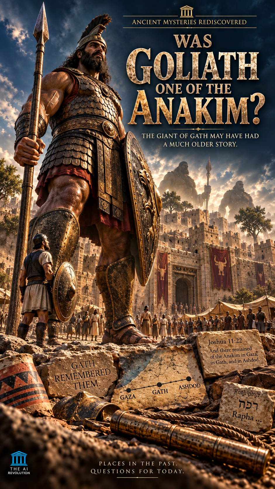
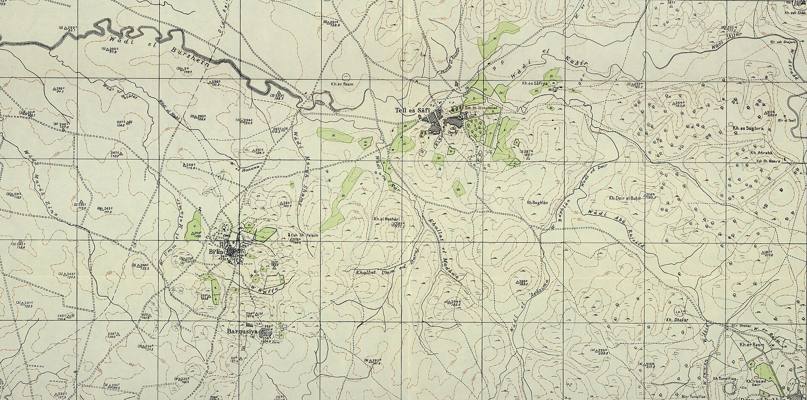
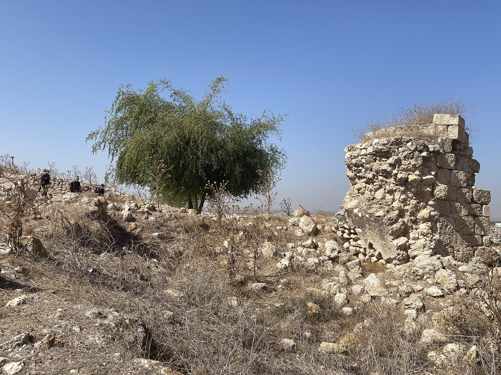
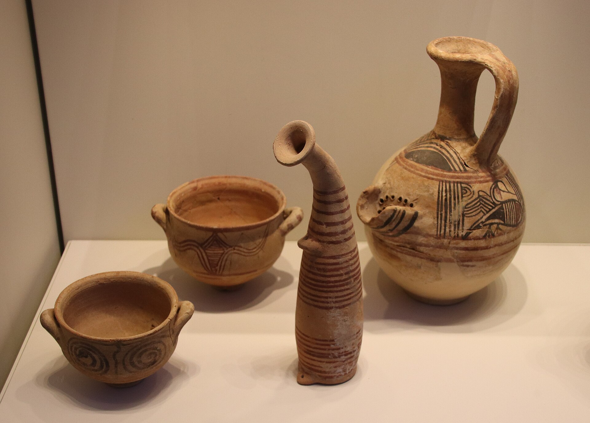

Anakim remained in Gath.
The geographic association is explicit in Joshua's narrative.
New investigation · Philistine Gath
Everyone knows
how Goliath died.
But where did he come from?
Everyone knows how Goliath's story ended. Almost nobody investigates where it began.
Where was Goliath really from, and was Goliath connected to the Anakim or Rephaim?
Begin with Gath ↓
The overlooked clue
The story introduces the champion by name, people, and place. Before the duel begins, the first clue is already on the page: Gath.
Not the battlefield. The city.
Gath was one of the principal Philistine cities. The narrative's repeated geographic label moves the investigation away from David's victory and toward the community that produced the warrior.
Read 1 Samuel 17:4 ↗City gate · ordinary human scale
Joshua 11:22 · The geographic reveal
Joshua's narrative names three places where Anakim remained: Gaza, Gath, and Ashdod. Gath sits inside that remembered geography.

GAZA
GATH
ASHDOD
Before the case goes further
The geographic association is explicit in Joshua's narrative.
No surviving biblical text gives that direct genealogical identification.
The name returns to the same city
Later traditions remember more extraordinary Philistine warriors. The accounts do not simply repeat Goliath; they preserve a cluster of formidable figures connected with Gath and Rapha.
A descendant of Rapha, armed with unusually heavy bronze equipment.
Another figure counted among the descendants of Rapha in the Philistine conflicts.
A man of great stature at Gath: six fingers on each hand and six toes on each foot.
The summary gathers four later warriors under Rapha-related language and Gath.
Evidence label: later literary tradition. These passages are testimony, not excavated bodies or biological evidence.
Compare 2 Samuel 21 and 1 Chronicles 20 ↗One city · three giant traditions
Associated with survival in Gath
Explicitly from Gath
Again associated with Gath
Appears in the later tradition
An interpretive question
The Hebrew Rapha language in these passages is commonly discussed alongside Rephaim traditions, but the equation is not a surviving family record. Rapha, Rephaim, Anakim, and Goliath must not be collapsed into one proven genealogy.

Shift of evidence · text to archaeology
Tell es-Safi is widely identified with ancient Gath. Decades of excavation have revealed a large Philistine city: fortifications and a monumental gate, temples and houses, distinctive material culture, inscriptions, and a major ninth-century BCE destruction horizon.

The visual language has a real source
The pigment band running through this investigation's headings comes from the red-and-black painted tradition of Philistine material culture. It is an interpretive design treatment grounded in real objects—not an archaeological reconstruction of a specific inscription.
The popular archaeology claim
No.
An inscribed pottery fragment from Tell es-Safi preserves two personal names, read by its publisher as ʾalwt and wlt. Their linguistic form is relevant to the Philistine name-world in which “Goliath” makes sense.
But neither name reads “Goliath,” and the sherd does not identify the biblical warrior. Its value is cultural and onomastic context—not personal identification.
Aren Maeir, BASOR 351 (2008) ↗The number changed before it reached us
4QSama, major Septuagint witnesses, and Josephus preserve the shorter reading—often estimated near 6 ft 9 in / 2.06 m, depending on the cubit used.
The medieval Masoretic manuscripts preserve the taller reading—often estimated near 9 ft 9 in / 2.97 m, depending on the cubit used.
The case must survive both sides
Goliath's association with Gath is explicit. The biblical tradition's association between Gath and surviving Anakim is explicit. Later extraordinary warriors associated with Rapha are again connected with Gath.
What the surviving evidence does not provide is the genealogical link required to prove that Goliath himself was an Anakite or Rephaite.
The connected giant universe
Return to Hebron, the scouts, the surviving coastal cities, and the tradition that first names the Anakim.
Continue the lineage questionFollow the Rephaim →Investigate how one ancient name moves between formidable peoples, earlier worlds, and the dead.
Companion film
The future Reel will have its own movie identity. No trailer, poster, or release URL has been assigned to this investigation.
The door beyond
Maybe Goliath wasn't the beginning of the giant story.
Maybe he was one of its last echoes.
Empires left. Gates fell. Generations vanished. The name of Gath remained attached to one man—while the city kept the longer memory.
The questions that remain
The biblical narrative identifies him as a Philistine from Gath. That place-name is the investigation's first direct clue.
Anakim are said to have remained in Gath, but Goliath is never explicitly called an Anakite. The connection is plausible, not proven.
Later warriors from Gath are linked with Rapha. Connecting that language to Rephaim is interpretive, and applying the lineage to Goliath adds another unproven step.
No. The Tell es-Safi inscription preserves names linguistically relevant to Goliath's cultural setting, not Goliath's personal identity.
Ancient witnesses differ between four cubits and a span and six cubits and a span. Converting either reading to modern units depends on the cubit assumed.
Tell es-Safi was a major Philistine city with monumental architecture, distinctive artifacts, inscriptions, and destruction evidence. It does not establish a race of giants.
Evidence desk
Goliath from Gath; Anakim remaining in Gaza, Gath, and Ashdod.
Later warriors, Gath, Rapha language, and the man with twenty-four digits.
Gate, fortifications, temples, public structures, artifacts, and siege evidence.
The names ʾalwt and wlt in a Philistine archaeological context.
Four-cubit and six-cubit manuscript traditions.
The page's red-and-black pigment identity is grounded in real material culture.
Method note: the official poster and stylized tablets are cinematic reconstructions. They are never presented as excavated evidence. Real archaeology is labeled and separately sourced.